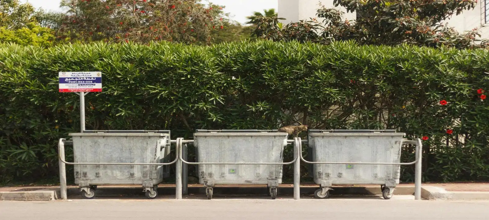

Who We Are
We help customers across Launceston organise practical skip bin hire solutions for residential, commercial, and construction waste removal. Our focus is on providing straightforward service, flexible bin sizes, and clear information that helps customers choose the right option for their project. Many people searching for cheap skip bins Launceston are simply looking for a reliable way to manage waste without unnecessary complexity, and that is exactly what we aim to provide.
Why Customers Choose Us
Many customers compare multiple cheap skip bins Launceston providers before booking. What often matters most is not simply finding the lowest advertised price, but choosing a skip bin that matches the project requirements. We help customers understand available sizes, waste categories, and site access considerations so they can make a practical decision and avoid unnecessary costs later.
Local Experience Across Launceston
As a local team based in Launceston TAS for 8 years, We work with customers throughout Launceston and surrounding suburbs on projects ranging from household cleanups and moving house to garden maintenance, renovations, and commercial waste removal. This experience helps us understand common waste disposal challenges and recommend skip bin solutions that suit different property types and project sizes.
How We Help Customers Save Money
One of the most common mistakes in waste removal is hiring a skip bin that is either too small or larger than necessary. We help customers estimate waste volume and choose a suitable option based on their project requirements. Customers looking for cheap skip bins Launceston often find that selecting the correct size from the beginning helps avoid additional collections, wasted capacity, and unnecessary expenses.
Our Approach To Skip Bin Hire in Launceston TAS
We believe waste removal should be simple, practical, and easy to organise. Whether you need a small skip bin for household rubbish or a larger bin for renovation debris, our approach focuses on helping you find a solution that matches your project. Rather than recommending the largest available bin, we focus on helping customers choose the most suitable option based on their actual needs.

Frequently Asked Questions
What makes a skip bin service affordable?
Affordability depends on more than the advertised price. The correct skip bin size, waste category, delivery requirements, and disposal costs all influence the overall value of the service. Choosing the right bin for your project often helps reduce unnecessary expenses.
How do I choose the right skip bin size?
The right skip bin depends on the amount of rubbish, waste type, and project scope. If you are unsure, we can help assess your requirements and recommend a suitable option. This helps avoid overfilling, additional collections, or paying for more capacity than you actually need.
Why do customers choose us after searching for cheap skip bins Launceston?
Many customers are looking for a cost-effective way to manage waste during cleanups, renovations, landscaping work, or moving house. While price is important, the most suitable solution is usually the skip bin that matches the project's waste volume and disposal requirements. Not only cheap price, but We help customers compare practical options so they can make an informed decision based on their actual needs. That is why our customers like us.